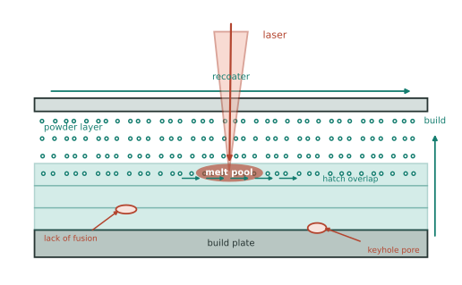
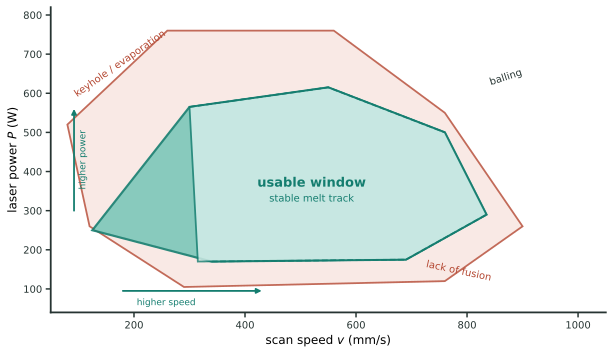

本页目录
工艺 II · 粉末、烧结与增材制造
有一整类材料无法靠"熔化-浇铸"制造：陶瓷熔点太高、硬质合金必须保持硬相不熔、难熔金属加工困难——它们走粉末路线：把粉压成形，再靠扩散把颗粒长在一起（烧结）。增材制造（3D 打印）是这条路线在当代的爆发。
学习层：给 L-PBF 熔池做一个有单位的粗筛，但不把它冒充工艺窗口
1. 具体材料工程情境：同一台设备为何会有未熔合和匙孔两种缺陷
一台 L-PBF 设备用 \(P=200 \mathrm W\) 激光，以 \(v=800 \mathrm{mm/s}\) 扫描，名义道间距 \(h=0.10 \mathrm{mm}\)、层厚 \(t=0.03 \mathrm{mm}\)。工程师想先用一个透明量估计激光能量被分到多大的扫描体积，再把粉末堆积率和缺陷风险作为额外证据。这个粗筛有用，但它没有知道粉末反射率、吸收率、预热温度、熔池对流或具体扫描策略，因此不能单独预测致密度或工艺窗口。
2. 必须作答的预测门：缩放、身份与高能量边界
揭示前回答三题：在 \(P,h,t\) 固定时把扫描速度 \(v\) 加倍，\(E_v\) 会加倍、减半还是不变？对不同粉末和热历史，\(E_v\) 应被理解为通用致密度定律、与参数无关，还是有单位的粗筛指标？若 \(E_v\) 远高于本实验的上参考值，哪一类代理风险会升高？三题完成后才显示参数扫频与缺陷账本。
3. 最小模型与假设：名义体积能量密度 + 明确的代理项
以 \(P\) 用 W（即 \(\mathrm{J/s}\)）、\(v\) 用 \(\mathrm{mm/s}\)、\(h,t\) 用 mm，名义体积能量密度为
它隐含“功率均匀落在名义扫描体积中”的强简化。为让实验能暴露边界，再定义粉末堆积率 \(\phi\)（无量纲）和三个只用于教学的代理：
其中 45、110 和 15 的数值单位是 \(\mathrm{J/mm^3}\)，是脚本内的 regime-specific 参考，不是材料常数或工业标准。\(r\) 都是无量纲 proxy；低能量代理偏向未熔合，高能量代理偏向匙孔/蒸发反冲，二者之间并不存在由本式保证的“可用窗口”。按这个定义，\(E_v=0\) 时 \(r_{\rm LOF}=1\)、\(r_{\rm cons}=0\)；这只是边界一致性，不是零能量下真实熔池的完整描述。
4. 动手实验：调 P、v、h、t 和堆积率
JavaScript 失效时的静态 fallback：默认参数为 \(P=200 \mathrm W\)、\(v=800 \mathrm{mm/s}\)、\(h=0.10 \mathrm{mm}\)、\(t=0.03 \mathrm{mm}\)、\(\phi=0.60\)。因此 \(E_v=83.3333 \mathrm{J/mm^3}\)。按本脚本的透明代理，\(r_{\rm LOF}=0.494168\)、\(r_{\rm KH}=0.144578\)、\(r_{\rm cons}=0.432700\)，均为无量纲；45–110 \(\mathrm{J/mm^3}\) 只是本教学例的参考带。
| 账本量 | 静态结果 | 单位 / 读法 |
|---|---|---|
| 激光功率 \(P\) | 200 | W = J/s |
| 扫描速度 \(v\) | 800 | mm/s |
| 道间距 \(h\) / 层厚 \(t\) | 0.10 / 0.03 | mm |
| 粉末堆积率 \(\phi\) | 0.60 | 无量纲；粉末床几何代理 |
| \(E_v=P/(vht)\) | 83.3333 | J/mm³；粗体积能量密度 |
| 未熔合 / 匙孔 proxy | 0.494168 / 0.144578 | 无量纲；经验形式只在本例内有教学意义 |
| 固结 proxy | 0.432700 | 无量纲；\((1-r_{\rm LOF})(1-r_{\rm KH})\) |
5. 误区与模型边界：能量密度不是工艺身份证
- \(E_v\) 的单位来自 mm 体系；把速度换成 m/s 却仍把结果写成 J/mm³，会造成量级换算错误。先固定单位，再比较数值。
- 相同 \(E_v\) 可能来自不同的 \(P,v,h,t\) 组合，而熔池尺寸、峰值温度、重熔搭接和冷却历史并不相同；所以等能量密度不等于等组织、等孔隙率或等强度。
- 粉末粒度、球形度、氧化膜、堆积率、激光波长与吸收率、保护气、基板预热和扫描旋转都可能移动某一设备/粉末组合经标定后的窗口。这里的 \(r_{\rm LOF}\)、\(r_{\rm KH}\) 只是可解释的 proxy，不是校准后的缺陷概率。
- “能量更高所以一定更致密”与“能量密度落在某个区间所以任何机器都能打印”都是越过模型边界的结论；必须用熔道截面、CT、密度、表面和热历史数据验证。
6. 正式回扣：从工艺参数回到可审计的量纲
先用 \(P/(vht)\) 检查功率怎样被名义体积稀释，再用堆积率与缺陷 proxy 记录“为什么这个粗筛不够”。这条链把工艺 II 的参数、粉末形貌和性能 I/II 的孔隙与疲劳联系起来，但不会替代熔池物理、热传导或工艺标定。
迁移问题：若两组参数拥有相同 \(E_v\)，一组高功率低速、另一组低功率高速，你会优先比较熔池宽深、热影响区、粉末吸收率还是 X/XY 扫描搭接？若 CT 显示未熔合与匙孔同时出现，哪些截面和热历史证据能判断是双峰窗口、粉末堆积不均还是代理阈值失效？
1. 烧结：用扩散把粉变成体
驱动力：颗粒表面积巨大 ⇒ 表面能是可观的能量储备，系统靠减少表面积降能——烧结是"表面能驱动的扩散过程"（热力 II 的扩散在此当主角）。
三阶段的概念图：颈部形成（颗粒接触点长出连接颈）→ 主要致密化（孔隙网络收缩）→ 孔隙孤立与晶粒长大。后期致密化通常变慢并与晶粒长大竞争，但并非一进入末期就“只长晶粒”；收缩量与动力学取决于粉末、绿体密度、气氛和烧结机制。
关键控制量：同系温度（许多固相烧结会落在约 \(0.7\)–\(0.9\,T_m\) 的量级，但不是通用窗口）、粉末粒度与团聚、绿体密度、气氛、时间和压力。热压/HIP 通过高温与外压促进孔隙收缩或闭合；液相烧结则依赖液相形成、润湿与溶解析出，WC–Co 是经典例子，工业陶瓷还广泛使用固相、反应、玻璃相辅助等不同路线。
工业主力：硬质合金刀具（WC 硬相 + Co 韧相——硬与韧的机械混合，"复合"思想的经典）、陶瓷件、粉末冶金齿轮/轴承（净成形省加工）、氧化物弥散强化合金 ODS（弥散相太稳定无法靠析出获得，只能粉末混入——性能 I 的第四种强化在此才有制造途径）。
2. 增材制造：逐层堆积的材料学
主流工艺谱（按能量与原料分）：
| 工艺 | 原理 | 材料 | 特点 |
|---|---|---|---|
| L-PBF（激光粉末床熔融，即 SLM） | 铺粉 + 激光逐点熔化 | 钛、镍基、铝、不锈钢 | 精度高、常见的金属 AM 路线之一 |
| EBM（电子束粉末床） | 真空 + 电子束 | Ti-6Al-4V 等 | 高温床、残余应力低、粗糙度高 |
| DED（定向能量沉积） | 送粉/送丝 + 激光电弧 | 金属 | 大件、修复、梯度材料 |
| 粘结剂喷射 | 喷胶成形 + 后烧结 | 金属/陶瓷 | 快、无热应力、需烧结致密化 |
| FDM / SLA | 熔丝堆积 / 光固化 | 高分子 | 桌面级主力 |

AM 特有的材料学问题（这是本页最值钱的一段）：
- 极端热历史：报道的熔池冷速可达 \(10^5\)–\(10^7\) K/s，但具体数值取决于设备、合金和热历史；它可能带来细组织、非平衡相、外延生长的柱状晶 + 沿建造方向的强织构 ⇒ 各向异性（一些体系的 Z 向性能低于面内，幅度需按牌号和试样核对）；
- 残余应力：逐层急冷急热 ⇒ 高残余拉应力，薄壁翘曲、开裂 ⇒ 基板预热、扫描策略（岛状/旋转）、去应力退火；
- 缺陷：未熔合（能量不足）、匙孔孔隙（能量过高蒸发反冲）、球化——对某一设备、粉末和扫描策略完成标定后，工艺窗口常可在"能量密度"图上表现为一块有限区域，两侧可能出现不同缺陷；它不是跨设备通用的区域（也是 AM 参数优化的重要图景，前沿 III 呼应）；
- 后处理由功能与工艺资格决定：承力件常需要去应力/热处理、表面加工，某些高完整性应用还使用 HIP；具体组合取决于合金、缺陷、尺寸、公差和认证路线，不能把 HIP 或机加工写成所有零件的必选项；
- 可打印材料的筛选：AlSi10Mg 常被用作相对易加工的教学示例，7075 则常被用作凝固裂纹挑战较大的示例；实际难度仍取决于粉末、设备、热管理和改性方案——"为增材设计的合金"是当前活跃研究方向。

AM 的常见价值主张（不是"什么都能打"）：拓扑优化几何、随形冷却、零件整合、小批量/备件，以及部分工艺中的梯度或多材料。高单件价值、复杂几何与较小批量常提高经济性，但不必三条同时满足；供应链、交期、质量保证和后处理也可能主导决策。
3. 数字感与反直觉
- 烧结收缩 10–20%（模具设计必须预留——尺寸精度的第一难点）；
- 某些 L-PBF 设备/合金会采用几十微米层厚与相近量级光斑；构建速率跨设备、层厚、扫描策略与质量要求差异很大，任何数值都应带机型和材料版本；
- 硬质合金：WC–Co 通过硬相、粘结相、晶粒度与孔隙共同调节硬度和断裂韧性；不能仅按 Co 体积分数推出固定的“数倍韧性”。
- 反直觉：烧结不需要熔化（低于熔点靠扩散）；AM 的"设计自由"其实受工艺约束严格（悬垂角、支撑、粉末排出孔——面向增材的设计 DfAM 是一门独立手艺）；打印金属件的疲劳性能常由表面粗糙度与内部孔隙主导，而非基体强度（性能 II 的裂纹逻辑）。
【研】对标 German《Sintering》、DebRoy et al. 的 AM 综述（Prog. Mater. Sci. 2018）；烧结动力学模型、熔池多物理场模拟、AM 组织-性能定量关系是研究生与产业界共同的前沿。
做出来之后，怎么知道里面长什么样？下一页：表征——材料科学家的眼睛。